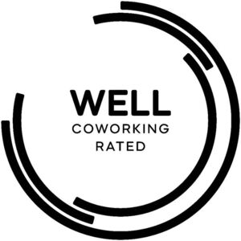

Trade Mark Journal No.2025/031 1 August 2025
WO0000001865082 (9,41,42,45)
Office of origin: United States of America
Date of International Registration:23 May 2025
Date of designation in the UK:
23 May 2025

The mark consists of the words "WELL COWORKING RATED" in capital font at the center of A circle. The word "WELL" is situated above the word "COWORKING," the word "COWORKING" is situated above the word "RATED." There is a series of semi-circles situated around the words "WELL COWORKING RATED".
Registration of this mark shall give no rights to the exclusive use of "COWORKING".
- Class 9
- Downloadable materials, namely, multimedia files containing artwork, text, audio, video, and internet web links, text files, video recordings and video files, audio recordings, images and written documents in the fields of human health, wellness and well-being, the design, construction, operation, maintenance and management of flexible workspaces, co-working spaces and other venues and indoor environments, protocols, guidelines, policies and best practices for maintaining and providing training and informative content related to healthy business operations that promote human well-being in coworking spaces and flexible workspaces and that relate to restorative places, productive work environments, air and water quality, maintenance operation policies and well-being education and engagement.
- Class 41
- Providing online, non-downloadable, publications and content, namely, educational, training, orientation and marketing videos, audio recordings, webcast recordings, infographics, articles, manuals, journals, surveys, assessments, questionnaires and images in the fields of human health, wellness and well-being, the design, construction, operation, maintenance and management of flexible workspaces and coworking spaces and that promote restorative places, productive work environments, air and water quality, maintenance operation policies and well-being education and engagement.
- Class 42
- Developing quality control and accreditation standards and practices for the design, construction, operation, maintenance and management of coworking spaces and flexible workspaces intended to promote occupant health, wellness and well-being, restorative places, productive work environments, air and water quality, maintenance operation policies and well-being education and engagement.
- Class 45
- Reviewing protocols, policies, practices and strategies to assure compliance with standards and best practices related to the design, construction, operation, maintenance and performance of coworking spaces and flexible workspaces intended to promote occupant health, wellness and well-being, restorative places, productive work environments, air and water quality, maintenance operation policies and well-being education and engagement.
International Well Building Institute PBC
Representative: Paul Vincenti Vincenti & Vincenti, P.C., One Liberty Plaza,, 165 Broadway, 23rd Floor, New York NY 10006, UNITED STATES OF AMERICA